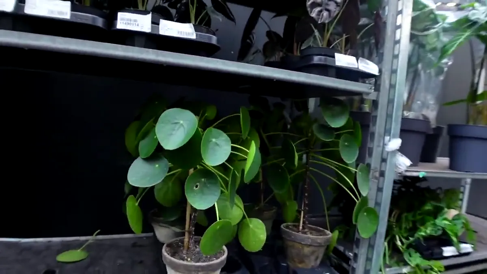

Keep Pilea peperomioides in bright indirect light, water after the upper soil begins to dry, and rotate it modestly for even growth. Separate larger pups with a clean cut and some roots or stem, then pot them into a small draining container.

Care at a glance
| Light | Bright indirect light; gentle sun can be useful after acclimation |
|---|---|
| Water | When the upper mix begins to dry; avoid prolonged saturation |
| Soil | Airy houseplant mix and a pot with drainage |
| Shape | Turns strongly toward light; rotate a quarter turn occasionally |
| Propagation | Separate rooted basal or stem pups |
| Safety | NC State lists low poison severity; still discourage chewing and verify individual pet needs with a vet |
Light determines the silhouette
A Pilea leaning hard toward the window is giving useful information. Move it closer rather than rotating it daily. Once light is adequate, a small weekly or fortnightly turn can create a more balanced crown. In Dutch winter, the position may need to be much nearer the window than in summer.
Older lower leaves naturally drop as the stem lengthens. A sudden wave of yellow leaves, especially with wet compost, deserves a root and watering check.
Water and pot choice
Water evenly until excess exits the drainage holes, then empty the outer pot. Check again only after the upper layer has dried somewhat. Small Pileas in terracotta may dry quickly; large plants in plastic cover pots can stay wet much longer. Pot material, root mass and season matter more than a universal number of days.
How to separate a Pilea pup
- Wait until the pup has several leaves and enough size to handle.
- Remove a little surface mix to see where it joins the parent.
- Use a clean blade to separate it with roots when possible, or take a short stem section.
- Pot into a small container with lightly moist, airy mix.
- Keep in bright indirect light and avoid both saturation and complete drying while it establishes.
If you do not want more pots, leave pups attached for a full clustered look or share them through a local stekjesbieb.
Common signs
- Cupped or curled leaves: assess rapid drying, heat, intense sun and root condition.
- Pale stretched growth: increase useful light.
- White mineral marks: wipe a leaf to distinguish surface deposits from tissue damage.
- Stem leaning: improve light direction and add a slim support if needed.